Может стоит подумать - а нужен ли Вам Дом ?


|
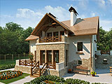 Я никогда ранее не думал о том, чтобы построить свой дом, вместо того, чтобы жить в городской квартире. Может быть везло с соседями. может быть не обращал внимание на шум за стеной или на заплеванный подъезд.Наверное с годами идея о том, чтобы построить или купить свой собственный дом, посещает почти каждого человека. С возрастом человек становится спокойнее, рассудительнее. Он начинает смотреть на жизнь более трезво и, может решить, что для него лучше. Да и здоровье начинает давать предупредительные сигналы. Многие люди так и оставляют идею строительства собственного дома на уровне мечты, рассуждая о том, что, вот бы было здорово жить вдали от шума и суеты, на природе. Вот бы иметь свой дом на опушке соснового леса, рядом с озером. Вот бы иметь сад, причем не для того, чтобы пахать на грядках, а чтобы устроить там газон, фонтан, беседку и отдыхать после тяжелого трудового дня. В этой статье я вывел НЕСКОЛЬКО основных причин, по которым люди меняют свою городскую квартиру на дом в коттетжном поселке или строят дом в деревне. Конечно, строительство дома достаточно объемная и сложная задача, но решив ее Вы приобретаете множество положительных моментов. 1. Экология большого города - причина строительства дома в деревне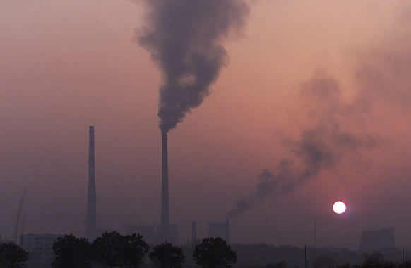 Не удивительно, что городские жители живут меньше, чем сельские и болеют такими страшными болезнями как рак, астма и т.д. 2. Шум большого города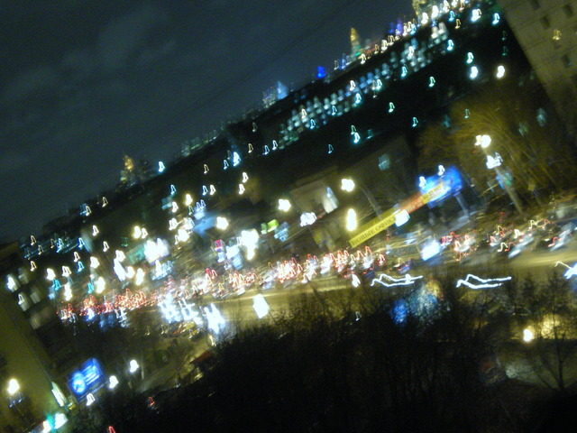 Моя квартира находится на 15 этаже. Казалось бы - высоко, шум улицы не должен беспокоить. Однако, когда летом открываешь окна, создается полное впечатление присутствия на оживленном перекрестке. Машины шумят так, что когда звонишь по телефону, собеседник думает, что ты находишся на улице.В этой же категории - шум от соседей по дому и таких нетихих вещей, как мусоропровод и лифт. 3. Соседи бывают разные, но лучше обходиться без них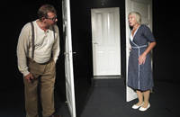 Тут как повезет. Бывает так, что соседи тихие, стены не сверлят, не выясняют отношения в два часа ночи, не включают глупую громкую музыку, не курят в коридоре, не устраивают на лестничной площадке свалку из старых вещей, велосипедов и прочей рухляди.Бывают даже такие соседи, которые не воруют лампочки с лестничной площадки, которые вы постоянно ввинчиваете, чтобы не шарахаться в темноте, не вытирают грязные ноги о ваш придверный коврик, не перерезают из вредности антенный провод, который идет в вашу квартиру и не пристают к вам с постоянными необоснованными претензиями. Однажды я слышал историю, как какая-то женщина замучила соседей только потому, что те имеют дома два компьютера. Она так боялась излучений, что постоянно портила нервы не только себе и соседям, но и участковому милиционеру. 4. Подъезд и лифт. Постройте свой дом и забудьте об этих проблемах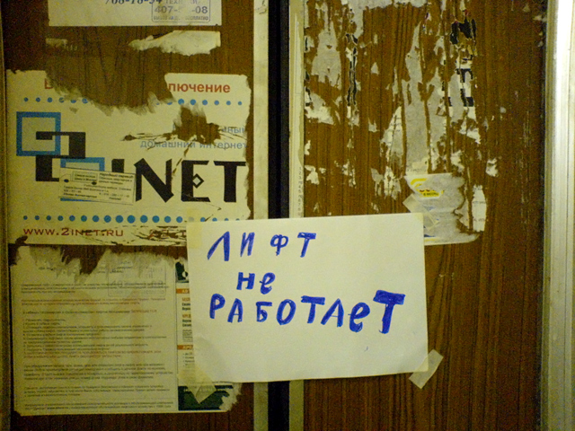 Это было заплеванное, изрисованное всякими гадостями помещение, освещаемое жиденьким светом убогой лампочки мощностью в 15 ватт. Иногда в подъезде было настолько накурено, что приходилось идти свою квартиру, стараясь не дышать. Перила были настолько изогнуты, что создавалось впечатление, что здесь был горный обвал. Запах гниющих овощей из сундуков дополнял эту унылую картину. Еще хорошо, что половина стекол в подъезде было разбито. Иначе можно было бы просто задохнуться. А уж лифт!!! Бедное устройство. Чего только не написано на стенах, каких только жевательных резинок не всунуто в вентиляционную решетку, каких только жидкостей не увидишь на полу... А кнопки! Их выдирают, сжигают, мажут всякими субстанциями... Противно даже дотрагиваться. А еще в лифтах часто курят. 5. Парковка. Постройте свой дом и гараж будет всегда рядом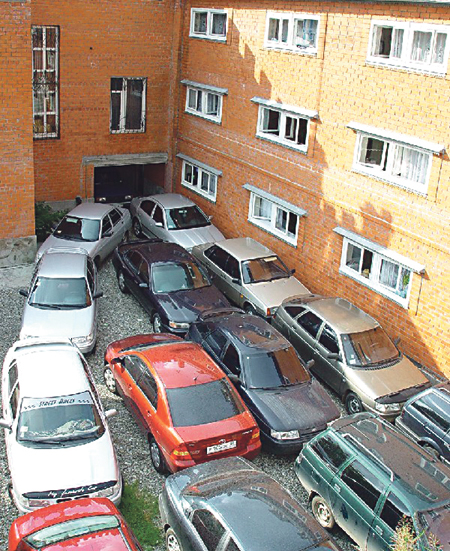 Я уж не говорю о том, что на парковке машины вскрывают, сжигают, прокалывают им колеса и сдирают фирменные лейблы. 6. ЖЭК, ТСЖ или ДУК. Постройте коттедж и управляйте им сами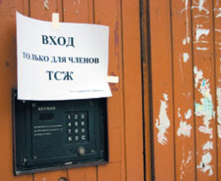 Стоит прийти к ним с проблемой, проблемы начинаются у тебя самого. Недавно написал заявку, чтобы пришел слесарь и отремонтировал кран. Ждал 8 (!) дней. Оказывается они просто потеряли (или выбросили) эту заявку. Зачем утруждаться - зарплату ведь и так получат. Несколько раз пытался инициировать собрание жильцов с целью сменить управляющую компанию, однако никому ничего не надо (см. пункт "соседи"). 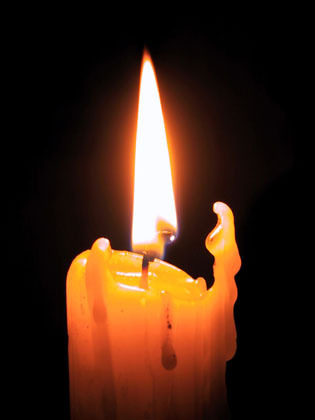 7. Отключили свет, отключили воду, отключили газ... Прелести полной автономииТакое бывает. Не везде, правда, но бывает. А чего стоят летние отключения горячей воды на две недели якобы для ремонта котельных? Если у Вас был свой дом или коттедж, Вы включили бы бензогенератор и переждали проблему с централизованной подачей энергии. Собственная скважина - вещь более нажедная, чем городской водопровод. 8. Отключили отопление. Поверните кран и в Вашем доме будет тепло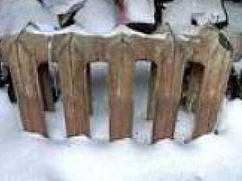 И такое бывает. Экономя денежки (для своего кармана) ТСЖ включает отопление только тогда, когда на улице уже выпал снег и температура в квартирах упала до 14 градусов.Весной тоже не ждите поблажек. Только немного солнышко выглянуло - считай, отопления у тебя в квартире уже нет. Да и зачем оно тебе - ведь уже почти лето. 9. Вода из-под крана. Колодезная чище и полезнее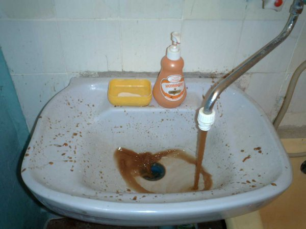 Иногда она имеет столь зловонный запах, что ее не только пить - мыться в ней боязно. Складывается такое ощущение, что ее выкачали со дна какого-нибудь болота. Страшно вонючая. 10. Отдых. Постройте свой дом и отдыхайте на природе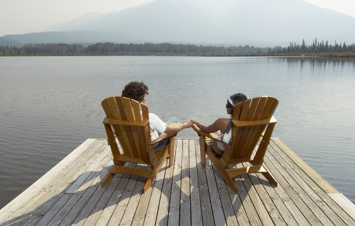 В более зрелом возрасте понятие "отдых" немного меняется. Это стремление побыть в тишине, полюбоваться закатом. Посидеть у костра в компании друзей, испечь картошки, порыбачить, попариться в баньке, прокатиться на велосипеде по лесным пропинкам, набрать грибов и т.д. Чтобы сделать все это, надо ехать за тридевять земель вон из города, а потом, захмелевшим и утомленным снова пилить в город, застрять в пробке, прийти в душную городскую квартиру. В мечтах рисуется совсем другая картина. Вы приезжаете с работы на автомобиле, у ворот нажимаете кнопку на пульте ДУ. Ворота открываются и Вы проезжаете к гаражу по асфальтовой дорожке или брусчатке. Там Вы снова нажимаете кнопку, вотора гаража открываются и Вы въезжаете внутрь. Закрыв ворота все теми же кнопками, Вы выходите из машины, берете портфель, сумку с покупками и прямо из гаража попадаете в нижний холл. Это особенно удобно, когда на улице дождь. Вам не приходится соблюдать особую осторожность, лавируя с сумками между мебелью. Площадь дома и городской квартиры - это совсем разные вещи. Далее можно затопить камин, поужинать и посидеть глядя на огонь, обдумывая планы на завтрашний день или беседуя с семьей. Вам никто не помешает - ведь соседей за стеной нет. Можно устроить небольшую вечеринку, с пением песен под караоке, распитием шампанского и прочими удовольствиями. Вы никому не помешаете - ведь соседей нет. Далее можно посмотреть фильм. Причем не на маленьком телевизоре со звуком, включенным чуть-чуть, чтобы не беспокоить соседей. Вы смотрите фильм на большом экране через проектор, наслаждаясь мощным звуком. Для этого, кстати, лучше соорудить подземный кинотеатр. Ночь проходит в тишине и спокойствии. Только стрекот цикад нарушает тишину. А если ночью выйти в сад! Сколько звезд можно увидеть на небе. В городе их видно меньше - мешают фонари. Можно причесть в шезлонг и наблюдать ночное небо. Можно подняться на веранду - там стоит телескоп. Это удобнее. Утро. Роса. Пение птиц. А какой воздух! Вы отлично выспались, полны сил. Вы так зарядились энергией, что работаете гораздо эффективнее, чем невыспавшийся, хмурый работник из городской квартиры. Естественно, Ваши гонорары идут вверх, Вы легче продвигаетесь по карьерной лестнице. В любой день Вы можете пойти побродить по лесу. Даже наобязательно что-то собирать. Просто выйдите за ворота, пройдите десяток шагов и Вы в лесу. Дажепростая пешая прогулка зарядит Вас энергией, не говоря уж о велосипедной или конной прогулке. В любой день, а не только в выходные Вы можете искупаться в озере или в бассейне в Вашем саду. Это еще один заряд энергии. Вы можете посидеть у костра, сварить грибной суп в котелке, испечь картошку. Ни при каких условиях Вы не сможете приготовить ничего подобного в городской квартире. А, может быть, Вы работаете дома? Вы программист или web-дизайнер? Тогда еще лучше. Ведь не надо каждый день ехать в город. Можно появляться там время от времени, покупая продукты и встречаясь с деловыми партнерами. А потом опять домой, на природу! |